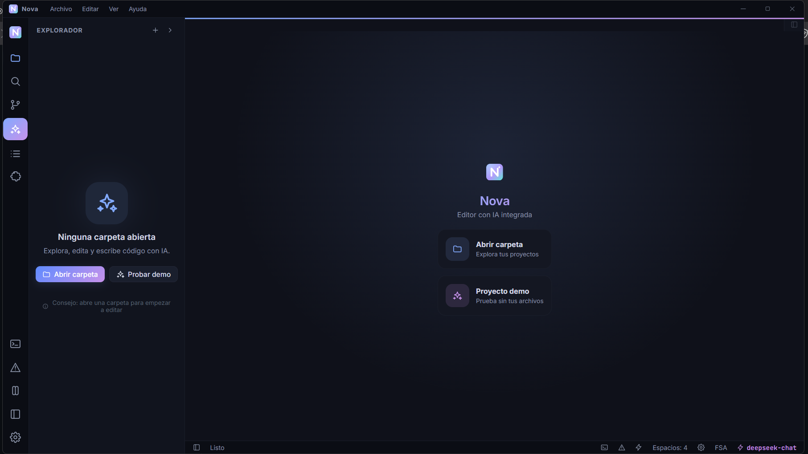

Nova combina el poder de Monaco con un asistente de IA que de verdad trabaja contigo: lee tu proyecto, propone cambios y ejecuta comandos — con tu aprobación.
Windows · macOS · Linux · gratis y de código abierto
VSIXExtension Host incluidoConstruido con Electron, React, Monaco y Vite. Rápido, oscuro y listo para tu día a día.
Sintaxis, minimapa, multi-cursor, esquema de símbolos y atajos tipo VS Code.
El asistente lee y busca en tu proyecto, escribe archivos y ejecuta comandos con tu permiso.
Shell real integrada: PowerShell en Windows, zsh en macOS y bash en Linux. No un simulacro.
Árbol de archivos con búsqueda, crear/renombrar/eliminar y arrastrar y soltar.
Estado, staging, commits, ramas, historial y diffs con push, pull y fetch integrados.
Emulación real de Vim: modos normal, insertar y visual, motions, operadores y búsqueda.
Busca e instala miles de extensiones reales desde open-vsx.org, con descargas y valoraciones.
Ejecuta el código JS de las extensiones: comandos, autocompletado, hover y edición real.
Busca y reemplaza en todos los archivos del espacio de trabajo con resultados en vivo.
Dark, Light, Midnight, Ocean, Forest, Sunset, Sakura, Mono y Paper. Cambia el aspecto al instante.
Detecta, descarga e instala versiones nuevas desde GitHub Releases sin tocar tus datos.
Elige tu proveedor de IA favorito. DeepSeek viene preconfigurado y recomendado.
Imágenes reales de la aplicación: el editor, los temas y el asistente de IA integrado.

Nova AI tiene acceso a tu espacio de trabajo y usa herramientas reales para ayudarte mejor. Las acciones que modifican archivos o ejecutan comandos siempre requieren tu aprobación.
list_dir y read_file para entender tu proyecto antes de responder.search_files encuentra coincidencias con número de línea.write_file crea o reemplaza archivos solo tras tu confirmación.run_command corre en PowerShell con tu permiso explícito.tú: ¿dónde se valida la API key y qué falta por hacer? Nova: déjame revisar el proyecto… > [herramienta] search_files pattern=apiKey > [resultado] src/lib/ai.ts:158: if (!cfg.apiKey) { onChunk(...) } Nova: se valida en src/lib/ai.ts. Falta añadir un indicador en la UI cuando no hay clave configurada. ¿Quieres que lo implemente? [escribe el archivo]
El instalador añade los comandos nova y nova-ai a tu PATH.
novaAbre el editor.
nova .Abre la carpeta actual como espacio de trabajo.
nova archivo.tsAbre un archivo directamente en el editor.
nova-aiAbre el editor con el asistente de IA enfocado.
Ctrl+K Ctrl+SReferencia completa de atajos dentro de la app.
Ctrl+`Abre la terminal integrada (PowerShell / zsh / bash).
Todo lo esencial de un editor moderno, sin costes ni dependencias.
Sí. Nova es de código abierto (licencia MIT) y completamente gratuito. La IA usa tu propia clave de DeepSeek, OpenAI o Anthropic — tú eliges el proveedor.
No. Todo se procesa en tu equipo. Solo se envía a la API de IA el texto que el asistente necesita para responder, y tu clave de API se guarda localmente.
Sí. Nova se compila para las tres plataformas. La terminal usa PowerShell en Windows, zsh en macOS y bash en Linux.
Sí. Nova tiene un Extension Host propio que ejecuta el código JavaScript de las extensiones, y un marketplace conectado a Open VSX.
Para el editor, no. Solo la función de IA requiere conexión. Puedes editar, usar Git, terminal y extensiones sin estar conectado.
Nova detecta versiones nuevas desde GitHub Releases y las instala automáticamente con un solo clic, en cada plataforma.
Gratis, rápido y con la IA que tú controlas.